32.6%
mAP@50

Dewa Ketut Satriawan Suditresanajaya
NIM: 2429101036
Subjektivitas hasil analisis, inkonsistensi interpretasi, waktu analisis lama
Variasi pencahayaan, sudut pandang drone, resolusi video
Mengoptimalkan YOLOv8n-seg untuk segmentasi korosi dengan 3 tingkat keparahan (mild, moderate, severe)
Evaluasi performa YOLOv8n-seg, U-Net, dan SegFormer untuk deteksi korosi
Implementasi sistem berbasis web dengan FastAPI dan Vue.js untuk batch processing video drone
1,846 images with balanced multi-class annotations
YOLOv8n-seg, U-Net, SegFormer comparison
Drone inspection videos (MP4, AVI, MOV)
Pixel-wise segmentation with severity classification
Combined corrosion_yolo (880 images) + steel_bridge_yolo (1,028 images)
YOLOv8n-seg segmentation format with 3-class annotations
Training (70%) | Validation (20%) | Test (10%)
Class-aware augmentation preserving corrosion characteristics
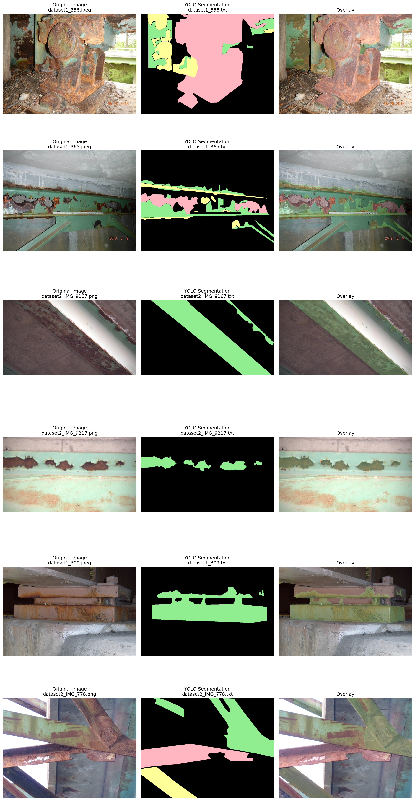
Unified detection and segmentation framework dengan anchor-free head optimization untuk multi-class corrosion detection.
Enhanced U-Net architecture dengan attention mechanism untuk precise boundary detection dan semantic segmentation.
Transformer-based semantic segmentation dengan hierarchical encoder dan MLP decoder untuk complex pattern recognition.
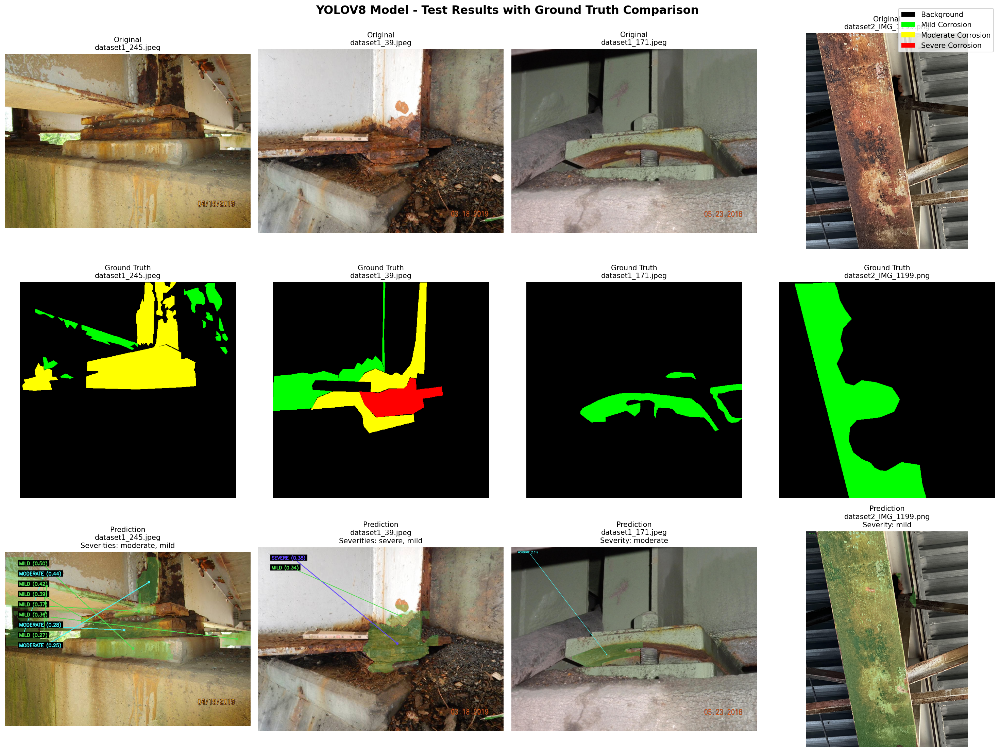
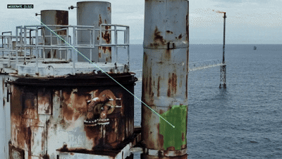
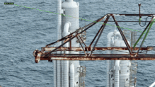
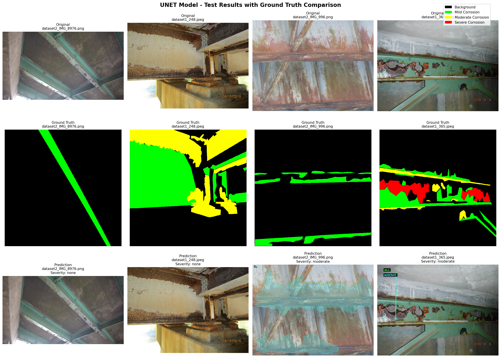
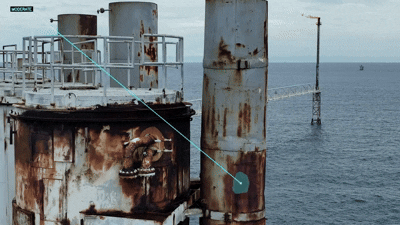
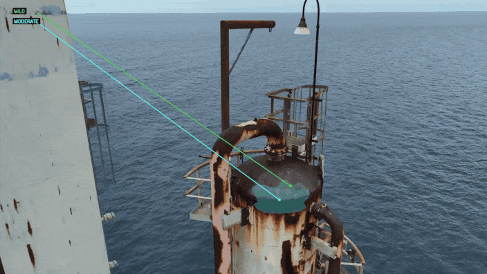
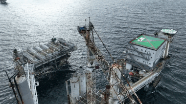
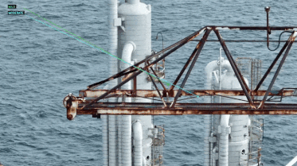
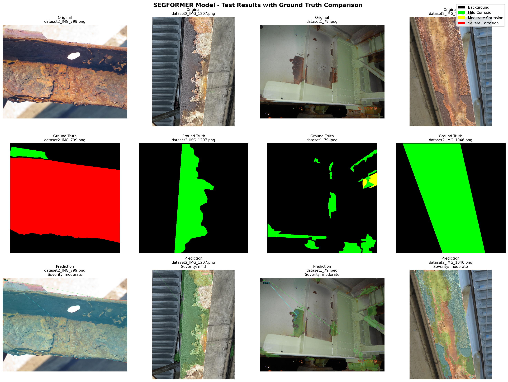
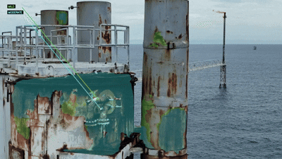

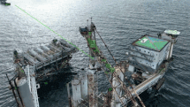
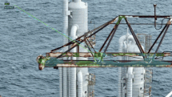
Highest overall accuracy (84.9%) and mIoU (43.7%) for pixel-wise segmentation
Severe corrosion class (3.6% instances) shows poor detection across all models
Best for Class 2 detection but requires data augmentation for balanced performance
Poor performance on corrosion classes, likely due to insufficient training data
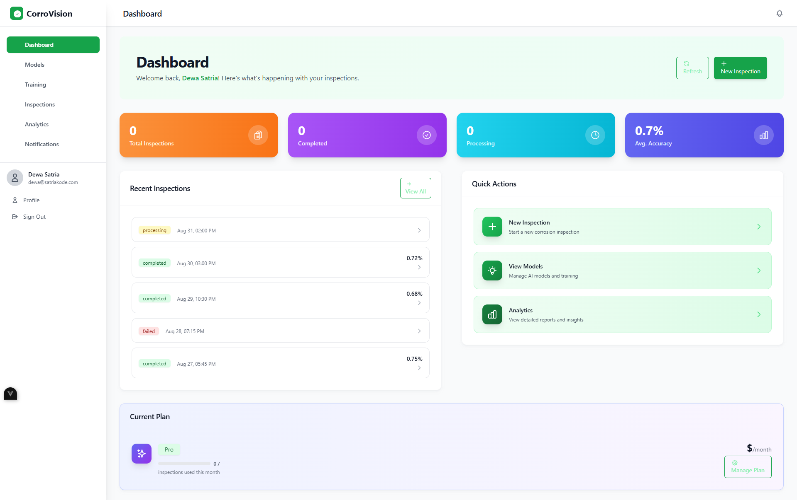
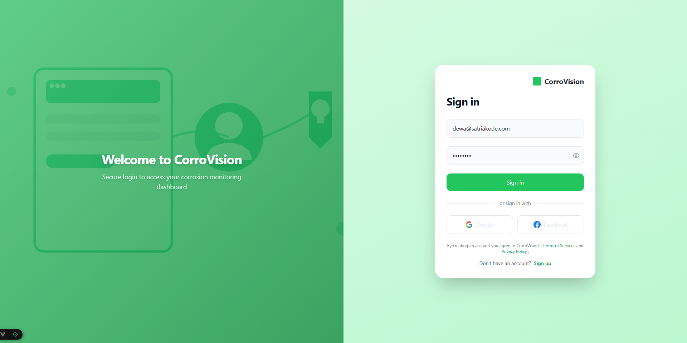
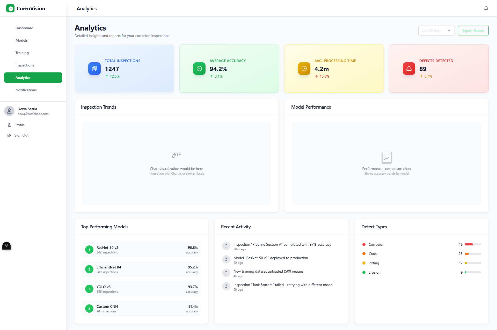
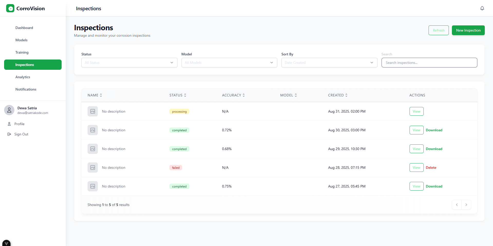
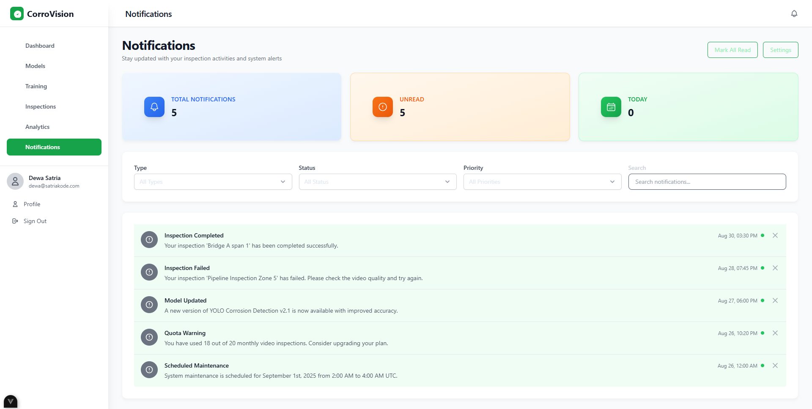
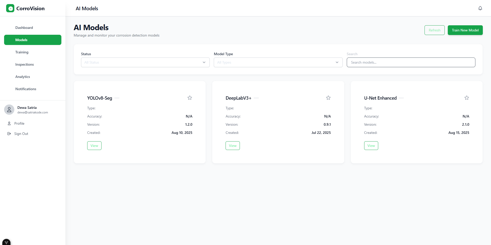
Client → API Gateway → Upload Service
File validation & metadata extractionUpload Service → Queue Service
Processing job schedulingQueue → Processing Service
Frame extraction & preprocessingProcessing → Inference Service
YOLOv8 corrosion detectionServices → Client (WebSocket)
Live progress notifications6 independent services dengan separation of concerns yang jelas untuk scalability dan maintainability
WebSocket notifications dan Redis queue untuk live updates status processing video
JWT-based auth, RBAC, rate limiting, dan circuit breaker untuk comprehensive security
Stateless design dengan load balancing dan database sharding untuk high-volume processing
Successfully merged and prepared 1,846 images dataset dengan balanced multi-class annotations untuk corrosion segmentation
Comprehensive evaluation dari 3 deep learning approaches: YOLOv8n-seg, U-Net, dan SegFormer untuk corrosion detection
Developed scalable web-based system architecture menggunakan FastAPI microservices dan Vue.js frontend
Optimal untuk pixel-wise segmentation dengan consistent performance across corrosion classes
Severe corrosion class memerlukan data augmentation dan specialized training strategies
Promising untuk industrial applications dengan optimizations dan balanced dataset
Estimated 40-60% reduction dalam inspection costs melalui automated video analysis
Analysis time dari jam menjadi menit dengan batch processing capabilities
Reduced human exposure ke hazardous inspection environments
Consistent dan objective corrosion assessment across different inspectors
satriawan.suditresnajaya@student.undiksha.ac.id
Program Pascasarjana Ilmu Komputer - Universitas Pendidikan Ganesha
Atas perhatian dan masukan untuk pengembangan penelitian selanjutnya
Generating PDF...